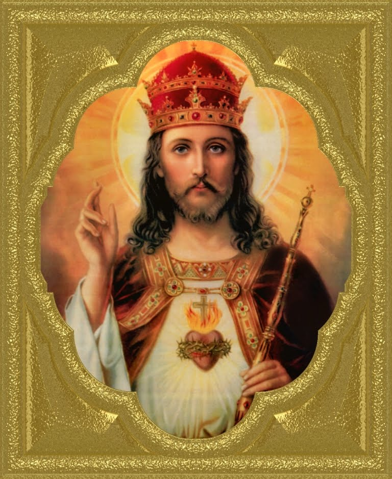

Jesus Cristo - Rei do Universo.
“Chegando ao território de Cesárea de Filipe, Jesus perguntou a seus discípulos: “No dizer do povo, quem é o Filho do Homem?”. Responderam: “Uns dizem que é João Batista; outros, Elias; outros, Jeremias ou um dos profetas”. Disse-lhes Jesus: “E vós, quem dizeis que eu sou?”” (Mateus 16,13-16)
